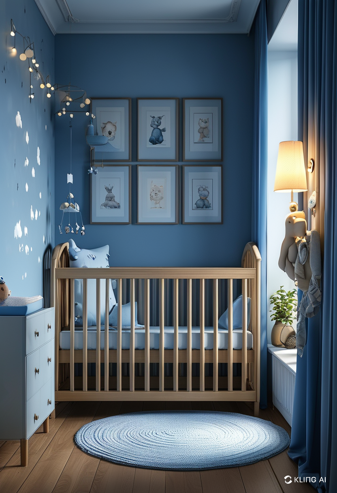
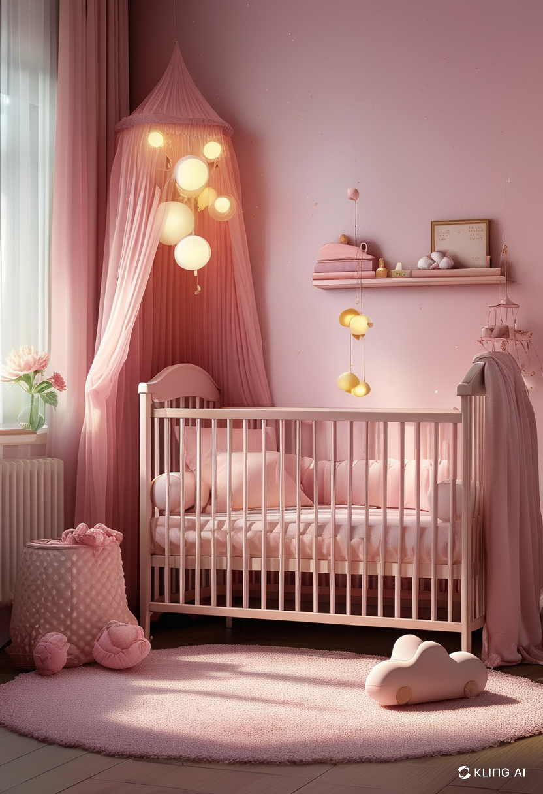
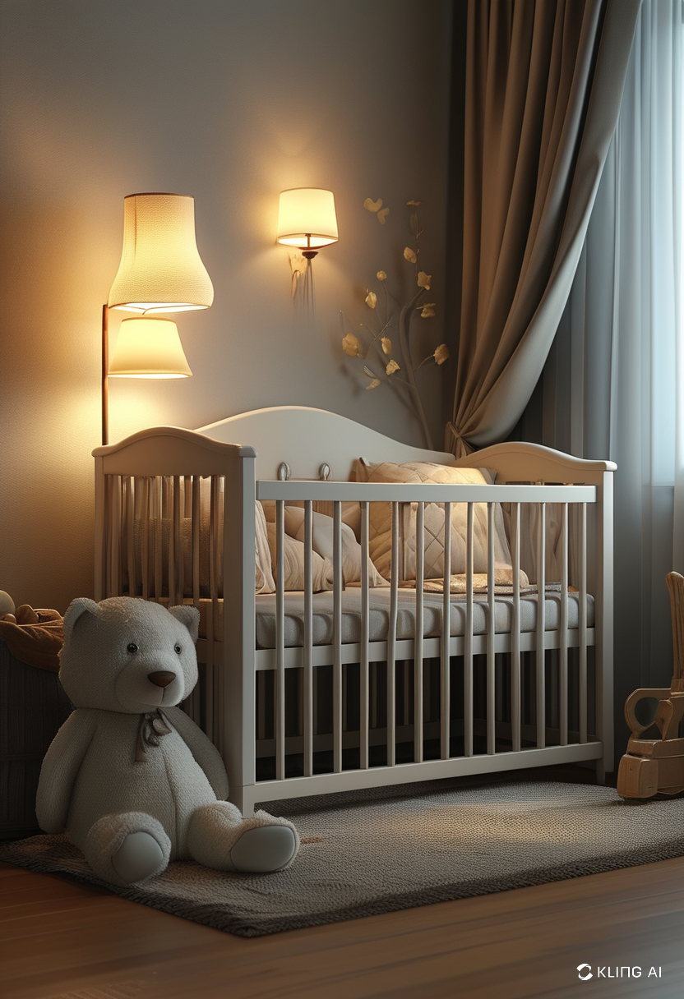
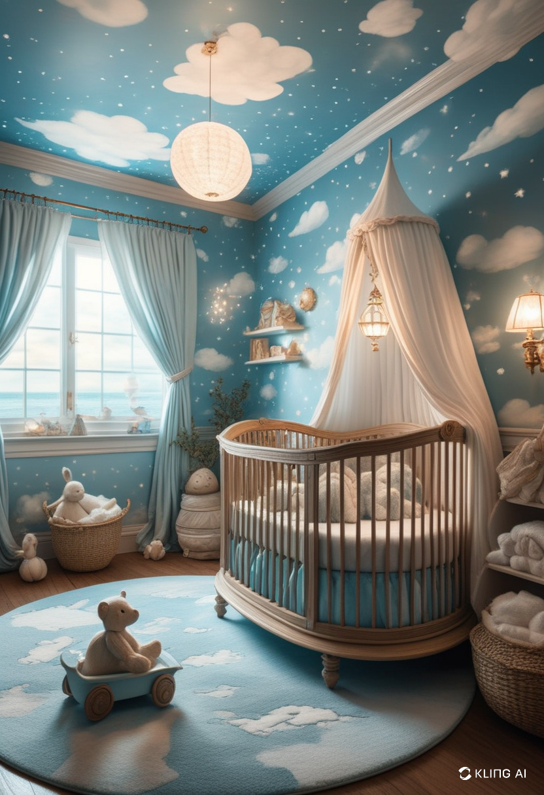

Designing a baby’s room is an exciting journey for any parent. Whether you're preparing for your first child or redecorating for a growing toddler, baby room decor plays a vital role in creating a safe, comfortable, and stylish space. From color palettes to furniture choices, every detail contributes to an environment where your little one can thrive. In this guide, we’ll explore innovative and practical ideas to help you design the perfect nursery.
The color palette sets the foundation for your baby’s room decor. While traditional shades like soft pastels remain popular, modern nurseries are embracing neutral tones and bold accents. Here are some trending color themes:
Soft and Soothing Pastels – Light pink, baby blue, and mint green create a calming atmosphere.
Neutral and Elegant – Beige, gray, and ivory offer a sophisticated and timeless look.
Nature-Inspired Hues – Earthy tones like sage green, terracotta, and mustard add warmth and tranquility.
Bold and Playful – Bright colors, such as navy blue, mustard yellow, and coral, bring energy and personality to the room.
Investing in high-quality, multi-functional furniture is essential for both aesthetics and practicality. Consider these key pieces:
Crib – The centerpiece of any nursery, choose a convertible crib that grows with your child.
Changing Table – Opt for a dresser with a changing station to maximize storage.
Rocking Chair or Glider – A cozy spot for late-night feedings and soothing your baby.
Storage Solutions – Baskets, shelves, and drawer organizers help keep essentials within reach.
Play Area – A soft rug with a few plush toys creates a safe and inviting space for your baby.
Adding decorative touches brings charm and personality to the nursery. Here are some inspiring decor ideas:
Wall Art and Decals – Choose whimsical wall stickers, framed prints, or murals for a personalized touch.
Themed Decor – Popular nursery themes include safari animals, celestial dreams, woodland creatures, and minimalistic Scandinavian designs.
Soft Lighting – Use warm LED lights, fairy string lights, or nightlights to create a cozy ambiance.
Canopy or Tent – A small canopy above the crib or a play tent adds an element of magic.
Customized Name Signs – Wooden or neon name signs make the room feel special and unique.
Smart Organization Tips for a Clutter-Free Nursery
Keeping a baby’s room tidy is crucial for functionality and safety. Implement these organization hacks:
Label Storage Bins – Clearly labeled bins make it easier to find diapers, clothes, and toys.
Hanging Organizers – Maximize vertical space by using hanging storage for essentials.
Foldable Laundry Hampers – Keep dirty clothes organized with an easy-to-access hamper.
Multi-Purpose Furniture – Use furniture with built-in storage to save space.
Many parents are opting for eco-friendly baby room decor to ensure a healthier environment for their little one. Consider these sustainable options:
Organic Cotton Bedding – Choose crib sheets and blankets made from organic materials.
Non-Toxic Paints – Opt for VOC-free paints to avoid harmful chemicals.
Sustainable Furniture – Look for cribs and dressers made from responsibly sourced wood.
Second-Hand or Repurposed Items – Upcycling vintage furniture adds character while reducing waste.
Creating a beautiful and functional baby room decor involves a balance of style, comfort, and practicality. Whether you prefer a modern, minimalist design or a whimsical wonderland, the key is to make the space warm, safe, and adaptable to your baby's growing needs. With the right color scheme, furniture, and decorative elements, you can craft a nursery that is both inviting and inspiring.
   